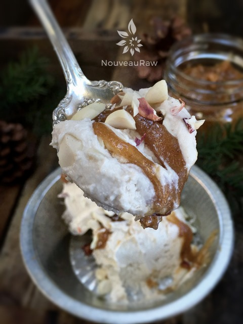
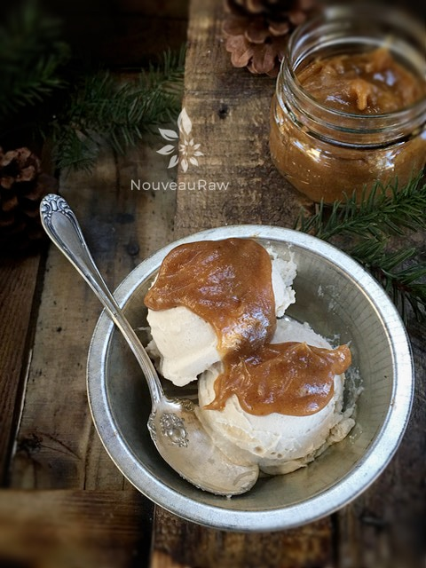

Rich Caramel Butterscotch Sauce

~ raw, vegan, gluten-free ~
Butterscotch is not a common flavor that I come across in the raw world of flavors. But this recipe reminded me of that warm, buttery, rich flavor that butterscotch imparts. Must have been the perfect combination of ingredients. I would like to say that I had planned it that way, but I didn’t. :) Planned or not; I wanted to dive headfirst into this sauce.
Have you ever seen that movie, Patch Adams? There was an elderly woman (if I remember correctly) who had a life dream of sitting in a pool of spaghetti noodles. And before she passed away Patch Adams made that dream come true.
Before I pass, I hope that I have a “Patch Adams” in my life who will make my dream come true too. What is my dream? To sit in a tub of thick, creamy, lotion-like substance…I am not picky as to what it is… and if it happened to be this Rich “Caramel Butterscotch” Sauce… well, who am I to complain!
I use to work in a compounding pharmacy and would make thick, creamy, prescription ointments and creams. EVERY time I made them, I fought the urge to bury my fingers in it. I wonder what triggers such desires? :) Am I the only one with this odd desire? Fess up!
This sauce pairs beautifully with my Raw Macadamia Nut Ice Cream with Candied Pecans. But I can also imagine it as a dip for sliced apples, or dollop on top of a piece of cake… all this thinking is making me hungry, so I best wrap this up.
Ingredients:
Yields 2 cups
- 4 oz Macadamia Nut Cream Base
- 3/4 cup Medjool dates, rehydrated
- 1/2 cup + 2 Tbsp water
- 1/4 cup almond butter
- 3 Tbsp candied pecans
- 1 Tbsp maple syrup or raw agave nectar
- 1/2 tsp Ceylon ground cinnamon
- pinch sea salt
Preparation:
- It is best to soften the dates prior to blending them.
- Place the dates in a bowl and cover with warm water.
- Let them sit for about 10 minutes or until soft.
- When ready to use, hand-squeeze the excess water out and place the dates in the blender.
- Add the macadamia nut cream base, water, almond butter, pecans, agave, cinnamon, and salt. Blend on high until creamy smooth. You can add more water if you want a thinner sauce.
- Store the caramel sauce in a mason jar or squeeze bottle (my preference to ease of use.) Keep in the fridge for up to 5 days.
-

-
a close up of rich caramel butterscotch sauce served over raw vanilla ice cream
-

-
a close up of rich caramel butterscotch sauce served over raw vanilla ice cream
© AmieSue.com